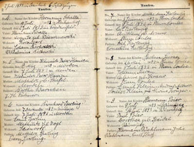

The data accessed from this page follows the guidelines in place (current to 2013) by the Government of Manitoba for release of vital statistics data - 100 years or earlier for births, 80 years or earlier for marriages, 70 years or earlier for deaths.
The "Diarium Pastorale" was a Pastor's diary, a small pocket-sized book that Lutheran pastors carried with them as they served their parishes in the early 20th century. It contained a variety of brief orders of services and prayers that he could use. Most important to us is that it contained records of the baptisms, marriages, and deaths that he served at. He also may have used it to keep track of his expenses as it was often necessary to travel from one community to another to serve a wide ranging parish.
Few of these books exist but a set of six was donated by the Willing family to Felix Kuehn in Winnipeg. He subsequently donated them to SGGEE and the content has been extracted.
Of particular value is that the data from 1894-1896 is not available anywhere else. This data includes information about families that may have stayed for only a few years in southern Manitoba (in particular, the region around Gretna) before moving on to homesteads in other parts of Canada and the United States. There may be records included here that show the first prescence of your family in North America. There are gaps in the available material which are detailed in the descriptions below.
Sample Baptism Page (click to enlarge) |
Sample Acounts Page (click to enlarge) |
|  |
The Births Database covers the years 1894 - 1914. In about that year Pastor Willing moved to serve a congregation near Trail, British Columbia. The book containing the records for that location is missing. Pastor Willing returned to Saskatchewan in about 1920. This means that the next update to this file will not be available till 2020.
Data is sorted by the names of the baptized person but you can use the search tool within Adobe Reader to find mother's surnames, godparents, etc.
Manitoba Communities Covered -
Pastor Willing was based in Gretna but prominantly also served the villages of Rosenfeld, Plum Coulee, Winkler and Morden with numerous ones in between. Some entries are as far east as Friedenstal and as far west as Brandon. The baptisms were performed in the years 1894-1896. The earliest birth date is from 1872.
Saskatchewan Communities Covered -
In 1897, Pastor Willing moved to the Edenwald district covering such additional communities as Longlaketon, Davin, Kronau, Strasburg and more. In about 1902 he moves on to Neudorf with surrounding communities of Pheasant Forks, Chickney, Wolsely, Ellisboro and more. He stays there through 1914.
North Dakota -
For some reason a few people from US communities traveled north, especially from the Pembina and Cavalier districts of North Dakota. There are not many and would be in the same time frame as Manitoba.
The Confirmations Database is based on the birth date recorded for the confirmand with the same time limits as used for births. The actual event therefore may have occurred as recently as the late 1920s. In addition to those regions listed under Births, the following are added.
Saskatchewan Communities Covered -
In about 1920, Pastor Willing returns to Saskatchewan to serve at Holdfast including Dilke, Disley and Sander regions. In about 1924 he moves to Rosthern.
Alberta Communities Covered -
The books stop at his last parish of Castor, Alberta where he moved in about 1928. The region included Loyalist, Leduc, and other communities.
The Marriages Database is based on the marriage date and is sorted by the name of the groom. Using the search function in Adobe Reader, you can also look for brides and witness names. This database is complete and no further additions are forthcoming. Communities covered are as noted for births and confirmations above.
The Deaths Database is based on the death date and is sorted by the name of the deceased. Using the search function in Adobe Reader, you can also look for spouse and other names. This database is complete and no further additions are forthcoming. Communities covered are as noted for births and confirmations above.
The Other Database applies only to Manitoba from 1894-1896. It does not provide any b/m/d information. However, it lists people primarily from communicant lists or from pastoral visitation lists. Many of these people are not associated with b/m/d events and so this is the only place you will find them. Typically you will find the date of the event and a location of residence. This could help to pinpoint a location where a family lived when there are no b/m/d events to rely on.
The Civil Records Database fills in some gaps for the years 1895-1896 for which some pages were missing in the Pastor's diary. These were extracted from municipal record books by our member, Howard Krushel. Includes only births and deaths. Only Germanic surnames were extracted and the extraction may be incomplete.